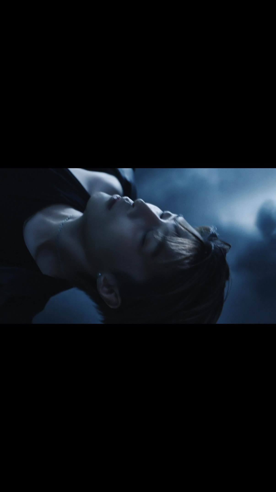

RECORD
AI visual studio
Character · Film · VFX
Work13
공식 참여 작업과
개인 프로젝트.
01 / SELECTED CREDITS
공식 참여 작업
 SELECTED CREDITS
SELECTED CREDITSCHARACTER / AI VIDEO
A2O MAY PAPARAZZI ARRIVE (Miniature ver.)
캐릭터 및 영상 제작
 SELECTED CREDITS
SELECTED CREDITSAI VIDEO
nævis Sensitive / Fall in the real
AI 크리에이터 참여

SELECTED CREDITSAI VFX
판청청 SKYFALL
AI VFX 참여
 SELECTED CREDITS
SELECTED CREDITSMUSIC VIDEO / VFX
MCND Devil Youth Club
VFX 참여
STAGE VISUALS
엔더블 Stage VFX
무대 VFX 작업
02 / PERSONAL WORK
Personal work
개인 제작 · 캐릭터 IP · 팬메이드
 VIEW ↗
VIEW ↗01
Z12열두 별자리의 아이돌 세계관
Character IP
↗ VIEW ↗
VIEW ↗02
The forbidden key금지된 열쇠와 달빛 숲
AI Film
↗ VIEW ↗
VIEW ↗03
NEURA — DreamNEURA 뮤직비디오
AI Film
↗ VIEW ↗
VIEW ↗04
Villain StrawberryAI 비주얼 필름
AI Film
↗ VIEW ↗
VIEW ↗05
First encounter, NEURA별에서 온 첫 만남 · POPUP7@판교
Exhibition
↗ VIEW ↗
VIEW ↗06
Lumi’s storyLUMI 캐릭터 프리뷰
Character IP
↗ VIEW ↗
VIEW ↗07
A2O MAY — Busan tour캐릭터 부산 투어 영상 · 개인 제작
AI Film
↗ VIEW ↗
VIEW ↗08
A2O MAY — Busan game3D 캐릭터 게임 실험 · 개인 제작
Character IP
↗